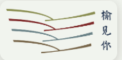

01
一层 · 24 小时城市书房
城市书房自习位
16 个演示余座48 席
THE CITY WITHIN BOOKS · 书中见城

榆林市图书馆YULIN LIBRARY
READING ZONE
检索、定位与扫书发现集中在一个工作台内；座位预约已前置到首页核心入口。当前数据为首版模拟。
COLLECTION OVERVIEW · 馆藏分布
没有找到匹配馆藏。
READING SIGNALS · YULIN
不公开姓名和精确位置，只呈现此刻同读、书旁留言与相关兴趣。
CURATED THIS MONTH · 本月精选
SUBJECT TRAILS · 主题书单
READING NOTES · 读书笔记
还没有笔记，先留下一条阅读线索吧。
NEW ARRIVALS · 新书速递
STUDY ROOM · 自习室座位专区
根据榆林市图书馆公开功能分区图，自习与安静阅读主要分布在一层 24 小时城市书房、二层自修区和三层自修区。
FOCUS TOGETHER · 陪伴学习
进入独立陪伴学习页面，自定义时长并同步到小程序。
点击进入专注空间一层 · 24 小时城市书房
二层 · 自修区
三层 · 自修区
余座为交互样机演示数据，正式上线后接入馆内实时座位系统。
COLLECTION DIRECTORY · 馆藏分区
选择分区，先查看楼层、馆藏范围与当前使用状态，再开启馆内导航。规模与实时状态为首版原型数据。
二层 · 开放阅览区开放 · 可借阅
从当代文学、古典诗词到绘画、音乐与设计，让一次随手翻阅成为进入另一种生活的入口。
中国文学 · 外国文学 · 诗歌 · 绘画 · 音乐
此刻的阅读线索近期有 23 位读者从中国文学继续浏览到地方诗歌。
楼层、馆藏规模和实时状态为交互原型，正式上线前以馆方数据为准。
THE ARCHIVE BEYOND · 古典藏书入口
从地方志、善本与金石拓片，进入以《四库全书》为核心的馆内阅览体验。
馆内阅览 · 四库全书 · 地方文脉 · Rokid AR
NON-CIRCULATING COLLECTION · 不外借古典藏书
古典藏书包含《四库全书》、榆林地方志、古籍善本与金石拓本；《四库全书》是其中的核心专题。典籍仅限馆内阅览，可查看注释，并在关键章节、人物、地点或事件处触发动画。
ROKID MAX · 入馆借用 · 约 100 副
在一层 AR 设备服务台领取 Rokid Max 后，可沿馆内开放路线探索。对准可交互古籍或地点标记并做轻触手势，即可触发 AI 生成的历史场景；古典藏书与《四库全书》编纂现场是旗舰体验。
宋 · 朱熹集注 特藏索书号 SK-J-008
从经典原文、今译与典故三个层次进入本册，沿段落场景继续探索人物与地点。
学而第一
子曰：“学而时习之，不亦说乎？有朋自远方来，不亦乐乎？人不知而不愠，不亦君子乎？”
书页化作行旅，远来的书友在此相逢。
WECHAT MINI PROGRAM · 轻量 AR 入口
无需下载独立应用。打开微信小程序，扫描图书封面、条码或馆内地点标记，即可发现读过这本书的人留下了什么，并体验部分 AR 内容。
当前二维码连接网页交互样机；正式微信小程序码将在 AppID 注册并发布后替换。
CITY MEMORY · 城市记忆台
每一本书都连着一条街、一个人、一段往事。留下你的城市记忆，也看看读者们共同保存的榆林片段。